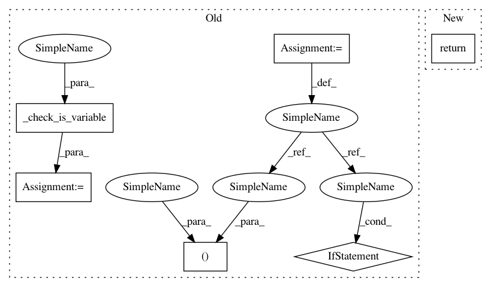

3bd4db86630b75bbbfb6c5c0a1a85603097bf9b2,torchaudio/transforms.py,F2M,__call__,#F2M#Any#,248
Before Change
def __call__(self, spec_f):
spec_f, is_variable = _check_is_variable(spec_f)
n_fft = spec_f.size(2)
m_min = 0. if self.f_min == 0 else 2595 * np.log10(1. + (self.f_min / 700))
m_max = 2595 * np.log10(1. + (self.f_max / 700))
m_pts = torch.linspace(m_min, m_max, self.n_mels + 2)
f_pts = (700 * (10**(m_pts / 2595) - 1))
bins = torch.floor(((n_fft - 1) * 2) * f_pts / self.sr).long()
fb = torch.zeros(n_fft, self.n_mels)
for m in range(1, self.n_mels + 1):
f_m_minus = bins[m - 1].item()
f_m = bins[m].item()
f_m_plus = bins[m + 1].item()
if f_m_minus != f_m:
fb[f_m_minus:f_m, m - 1] = (torch.arange(f_m_minus, f_m) - f_m_minus) / (f_m - f_m_minus)
if f_m != f_m_plus:
fb[f_m:f_m_plus, m - 1] = (f_m_plus - torch.arange(f_m, f_m_plus)) / (f_m_plus - f_m)
fb = Variable(fb)
spec_m = torch.matmul(spec_f, fb) // (c, l, n_fft) dot (n_fft, n_mels) -> (c, l, n_mels)
return spec_m if is_variable else spec_m.data
class SPEC2DB(object):
Turns a spectrogram from the power/amplitude scale to the decibel scale.
After Change
fb[f_m:f_m_plus, m - 1] = (f_m_plus - torch.arange(f_m, f_m_plus)) / (f_m_plus - f_m)
spec_m = torch.matmul(spec_f, fb) // (c, l, n_fft) dot (n_fft, n_mels) -> (c, l, n_mels)
return spec_m
class SPEC2DB(object):
Turns a spectrogram from the power/amplitude scale to the decibel scale.
In pattern: SUPERPATTERN
Frequency: 3
Non-data size: 6
Instances
Project Name: pytorch/audio
Commit Name: 3bd4db86630b75bbbfb6c5c0a1a85603097bf9b2
Time: 2019-01-04
Author: david@da3.net
File Name: torchaudio/transforms.py
Class Name: F2M
Method Name: __call__
Project Name: pytorch/audio
Commit Name: 3bd4db86630b75bbbfb6c5c0a1a85603097bf9b2
Time: 2019-01-04
Author: david@da3.net
File Name: torchaudio/transforms.py
Class Name: SPEC2DB
Method Name: __call__
Project Name: pytorch/audio
Commit Name: 3bd4db86630b75bbbfb6c5c0a1a85603097bf9b2
Time: 2019-01-04
Author: david@da3.net
File Name: torchaudio/transforms.py
Class Name: MEL2
Method Name: __call__